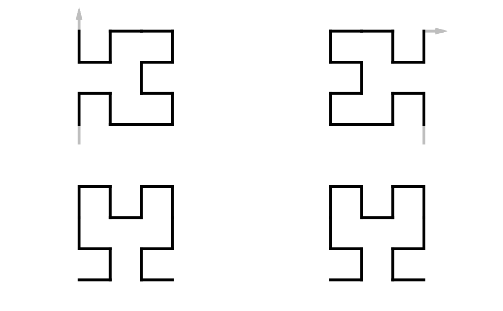

Shape of the curve
Usage
# S4 method for sfc_2x2
sfc_shape(p)
all_2x2_shapes(level = 2)
# S4 method for sfc_3x3_peano
sfc_shape(p)
all_3x3_peano_shapes(level = 2)
# S4 method for sfc_3x3_meander
sfc_shape(p)
all_3x3_meander_shapes(level = 2)Value
sfc_shape() returns a two-column data frame of the xy-coordinates of the shape curve.
all_2x2_shapes() returns a list of n two-column data frames where each data frame corresponds to
the xy-coordnates of the corresponding shape curve.
Details
The shape of the curve is defined as a form of the curve without considering entry/exit directions, rotation, flipping (reflection) nor reversing.
2x2 curve
The process of selecting the shape segment of the curve denoted as P is:
The entry-point should locate in the bottom left subunit and the exit-point should locate in the bottom right subunit. We try the four rotations (0, 90, 180, 270), and the four rotations on the horizontally flipped curve. Once we find the transformed curve that satisfies this criterion, we name it as
P2.We also generate
P3which is a horizontally flipped version ofrev(P2).We compare the first point
pofP2andP3, and select the one whosephas the smaller x-coordinate (i.e. more to the left of the curve). If the x-coordinates ofpare the same inP2andP3, we select the one whosephas the smaller y-coordinate.
3x3 Peano curve
The process of selecting the shape segment of the curve denoted as P is:
The entry-point should locate in the bottom left subunit and the exit-point should locate in the top right subunit. We try the four rotations (0, 90, 180, 270). Once we find the transformed curve that satisfies this criterion, we name it as
P2.We also generate
P3which is a 180 degrees rotation on the reversedP2,P4which is a diagonal flip with slop of 1 onP2andP5which is a diagonal flip with slop of 1 onP3.We calculate the "UID" of
P(2-5)and pick the one with the smallest UID as the final curve.
The UID of a 3x3 Peano curve is based on the hierarchical indices of the units on it. The hierarchy of the Peano curve is traversed in a depth-first manner. On each node, the orientation of the corresponding unit is calculated where vertical is 1 and horizontal is 2. The digits are concatenated into a long string.
all_3x3_peano_shapes() only calculates all shapes for Peano curve on level 2.
all_3x3_meander_shapes() only considers the Meander curve with all subunits on all levels in forward orientation.
Examples
p1 = sfc_2x2("I", 11)
p2 = sfc_2x2("R", 22)
draw_multiple_curves(
p1, p2,
sfc_shape(p1), sfc_shape(p2),
col = "black")

sl = all_2x2_shapes(2)
draw_multiple_curves(list = sl, lwd = 2, col = "black")
sl = all_2x2_shapes(3)
draw_multiple_curves(list = sl, lwd = 2, col = "black")
p = sfc_3x3_peano("I", 11)
draw_multiple_curves(
p, sfc_reverse(p),
sfc_shape(p), sfc_shape(sfc_reverse(p)),
col = "black")
# \dontrun{
sl = all_3x3_peano_shapes()
length(sl)
#> [1] 272
# the first 8 shapes
draw_multiple_curves(sl[1:8], col = "black")
# }
sl = all_3x3_meander_shapes(2)
draw_multiple_curves(list = sl, lwd = 2, col = "black")